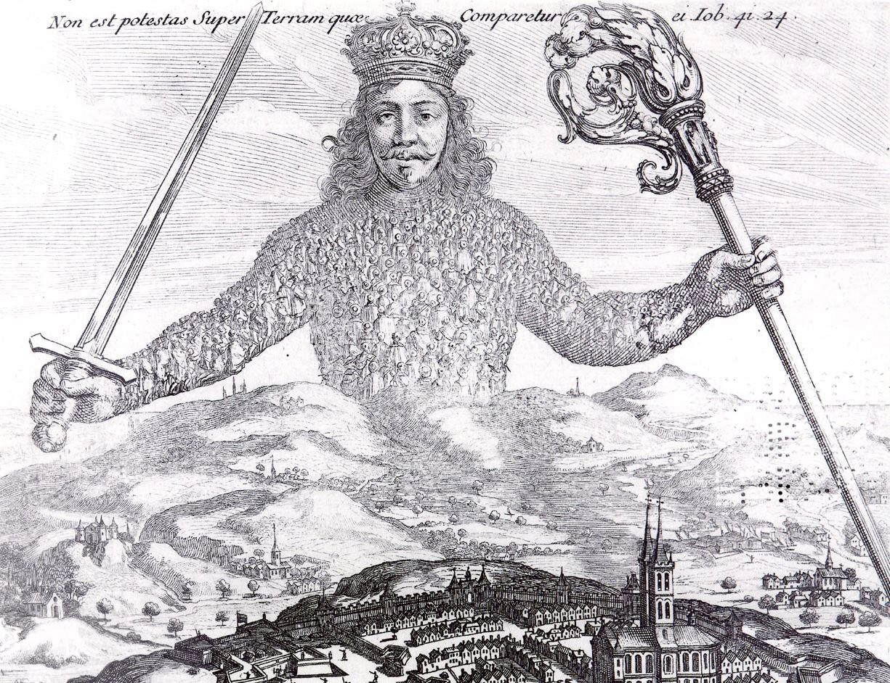

| Hobbes |
home outline readings questions papers presentations |
Phil 340: Classical Political Philosophy Obedience and Disobedience Jeremy Anderson |
|
Hobbes on Unity vs. Mere Consent
 Above is part of Leviathan’s famous title page. (Here is the whole title page.) It shows a giant person whose body is made up of people. The giant is the state, and the people are its citizens, whose loyalty gives the government its power. Leviathan's Introduction likens the commonwealth to an “artificial man,” that is, a person constructed by, and of, people: The sovereignty
is an artificial
soul, as giving life and motion to the whole
body; the magistrates,
and other officers
of judicature and execution, artificial joints; reward and punishment (by
which
fastened to the seat of the sovereignty every joint
and member is moved to perform his duty) are the nerves, that do
the same in the body natural; the wealth and riches of all
the particular members, are the strength; salus populi (the
people’s safety)
its business; counsellors,
by whom all things needful for it to know are
suggested unto it, are the memory; equity, and laws, an
artificial reason and
will; concord, health; sedition, sickness; and civil war, death. (L
Intro.1; Hobbes's emphasis)
If the commonwealth is a person writ large and civil war is its death, then we might regard those things that weaken it and may kill it as diseases, poisons, and so on. (Hobbes describes them that way in chapter 29.) Here, however, we will note how the "artificial man" is made strong. Hobbes argues that people in a state of nature may form groups for defense against a common enemy. But such groups are unstable because of people's inherent tendencies to disagree with and envy each other. They are vulnerable to discord from internal dissent and contention for power (L 17.4-11; cf. L 6.6). Therefore, Hobbes says, people must subject themselves to a “common power,” in a particular way he describes in chapter 17: The
only way to erect such a common power, as may be able
to defend them from the invasion of foreigners, and
the injuries of one another...is, to confer all their
power and strength upon one man, or upon one assembly
of men, that may reduce all their wills, by plurality
of voices, unto one will: which is as much as to say,
to appoint one man, or assembly of men, to bear their
person; and every one to own, and acknowledge himself
to be author of whatsoever he that so beareth their
person, shall act, or cause to be acted, in those
things which concern the common peace and safety; and
therein to submit their wills, every one to his will,
and their judgments, to his judgment. This is more
than consent, or concord; it is a real unity of them
all, in one and the same person, made by covenant of
every man with every man, in such manner, as if every
man should say to every man, I authorise and give up my right of
governing myself, to this man, or to this assembly
of men, on this condition, that thou give up thy
right to him, and authorize all his actions in like
manner. This done, the multitude so united in
one person, is called a COMMONWEALTH, in Latin
CIVITAS. This is the generation of that great
LEVIATHAN, or rather (to speak more reverently) of
that mortal god,
to which we owe under the immortal God, our peace and defence.
(L 17.13; Hobbes's emphasis)
I quote this passage at length so that we may clearly see two things. First, Hobbes says the process he is about to describe is the only way to find safety from hostile outsiders and from each other. Second, notice the repetition and elaboration throughout the middle of the paragraph. Hobbes emphasizes setting aside our own individual judgments and accepting instead the sovereign’s judgment “in those things which concern the common peace and safety,” so much so that the sovereign’s actions are said to be authorized by us all. This creates a “multitude...united in one person” which is the source of “our peace and defence.” Hobbes’s notion of authorization is demanding, and so important that Leviathan’s chapter 16 is devoted to explaining it. If I authorize the sovereign and the sovereign punishes me for some crime, Hobbes believes I have authorized my own punishment (L 18.3), even if I try to deny it. When we all authorize the sovereign, the sovereign’s judgments are to be taken as ours; her (or his or their) governance replaces our individual governance of ourselves to the extent needed for “the common peace and safety.” Hobbes carefully contrasts authorization here from mere “consent, or concord”: "This is more than consent, or concord; it is a real unity of them all, in one and the same person." Consent is fragile: we consent with each other when each of us separately decides to do something—say, carpool to work. But in merely consenting, each of us retains our right to act according to our own judgments. Because of this, our concord will disappear as soon as one of us decides for whatever reason to break it--say, you dislike my car's color. Unity, however, is (or is supposed to be) strong: the “real unity” created by authorizing the sovereign can't be revoked except in extreme circumstances, which Hobbes discusses in chapter 21.* This sort of unity, where one accepts someone else's judgments, may seem weird and magical. How could you possibly give up your judgment to someone else? But we can find real-life examples of people doing just that every day. One example is accepting courts' rulings. Suppose two drivers collide and disagree about who is to blame for the damage to their cars. Each believes the other deserves all the blame. Suppose their dispute goes to a court of law, and the court rules that each is partly to blame--i.e., the court's ruling does not match either driver's individual judgment. But the drivers must accept the court's ruling as authoritative. Well, wait, you might say; can't they appeal the court's ruling? Yes, but eventually they will reach some court which has the final say. When the drivers accept that ruling, each accepts the judgment of another--the court--in place of their own. Further, due to the court's position of authority in society, the drivers may not simply change their minds about whether to respect the ruling. Hobbes's notion of real unity expands this acceptance of another's judgment to cover accepting the sovereign's judgments in all matters of common peace and safety. Of course it is possible that one or both drivers still disagrees with the court. They may want try to force each other to pay. Left to themselves, their dispute may become violent. In a stable society this would be the exception, but it could happen, and it could be a problem. Hobbes's solution is to rely on the loyalty of other citizens who serve as police: their combined power can, if needed, intimidate the drivers into behaving themselves or, if they break the law, may fine or imprison them as an example to others. As Hobbes continues: For by this authority, given him by every
particular man in the commonwealth, [the sovereign]
hath the use of so much power and strength conferred
on him, that by terror thereof, he is enabled to form
the wills of them all, to peace at home, and mutual
aid against their enemies abroad. And in him
consisteth the essence of the commonwealth; which (to
define it,) is one
person, of whose acts a great multitude, by mutual
covenants one with another, have made themselves
every one the author, to the end he may use the
strength and means of them all, as he shall think
expedient, for their peace and common defence.
(L 17.13)
The authority conferred on the sovereign gives her (or him or them) power. It is what makes the sovereign radically superior to the citizen. This power guides the subjects’ wills in whatever direction the sovereign deems necessary for peace and preservation. Being backed by threats of punishment is how the sovereign’s command becomes “the reason we have of doing the action commanded.” This contrast between consent and unity is not new to Leviathan. Hobbes uses it in his earlier accounts of erecting the sovereign in The Elements of Law (1640) and De Cive (1642) (see EL 19.6-7 and DCv 5.6-8). As I explain at length elsewhere, Hobbes's discussions of disorder become increasingly reticent about identifying the necessary preconditions for rebellion. But in his discussions of the commonwealth’s "birth," Hobbes is firmly committed to the necessity of this union. ____________________________ * Close readers may notice that Hobbes is not always careful to distinguish consent (in the sense of deciding to go along with others but retaining the right of private judgment) from “real unity” (which is formed by many people consenting to yield their right of private judgment to another). For example, he uses “consent” to describe how the sovereign judge of right and wrong is set up at L 6.7; and in L 10.3 he says, “The greatest of human powers, is that which is compounded of the powers of most men, united by consent, in one person,” clearly referring to the sovereign. Similar uses of “consent” appear at L 15.8, 16.13, 18.2, and elsewhere, and we have already seen Hobbes say that the commonwealth’s health consists of “concord” in L Intro.1 above. Because he is so careful to distinguish the two meanings in EL 19.6, DCv 5.6, and L 17.13, which are his most detailed descriptions of how the sovereign is created, I take these other instances of “consent” and “concord” to be shorthand for the special sort of consent that creates “real unity,” i.e., as signifying consent to give up (among other things) the right of private judgment rather than consent merely to act together for a while. |
| . |